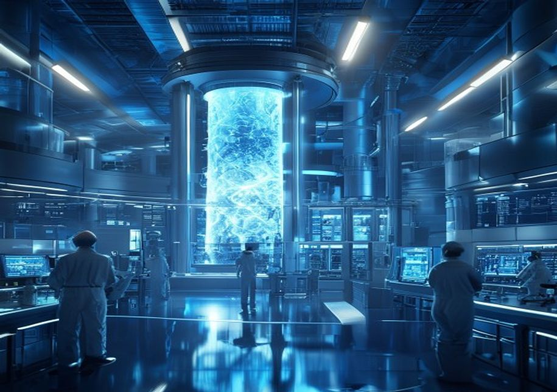
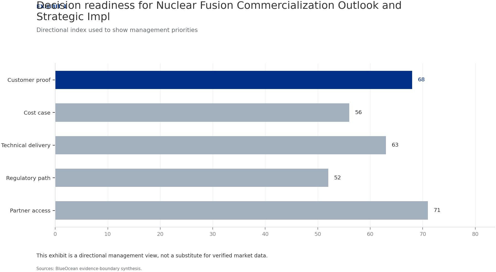
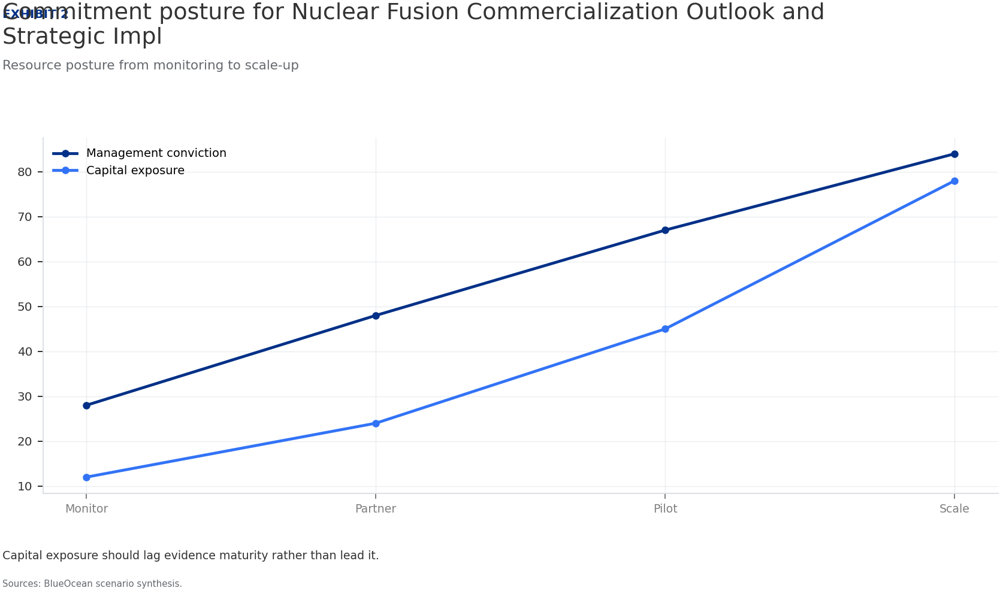
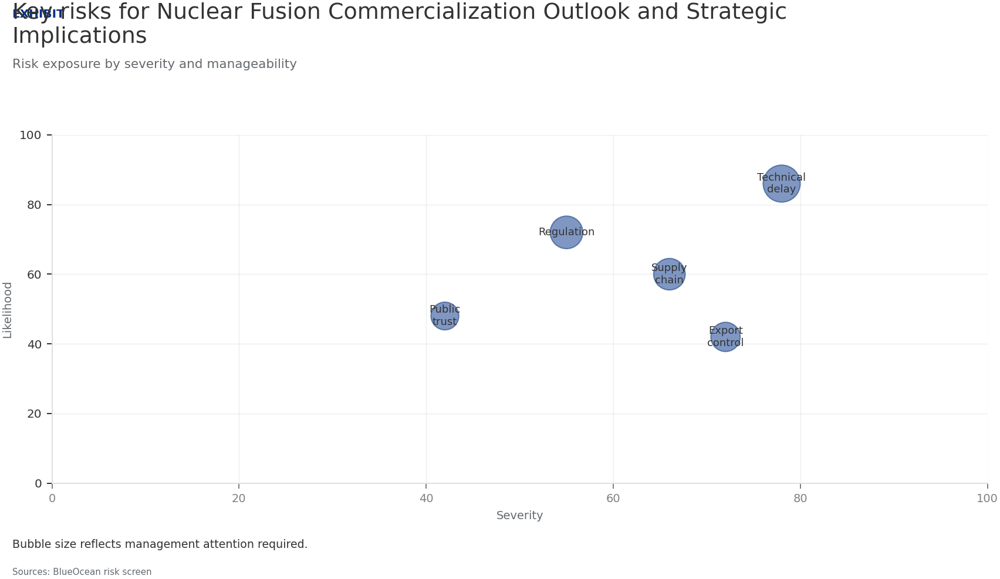

Nuclear Fusion Commercialization Outlook and Strategic Implications
The research narrows the agenda to a few high-conviction issues
Fusion technology has achieved scientific breakeven (Q>1) in laboratory settings, but no plant has demonstrated sustained net-positive energy at commercial scale; commercial viability remains a decade or more away.
Levelized cost of electricity (LCOE) for fusion is highly uncertain, with estimates ranging from $50/MWh to over $150/MWh by 2050, compared to $20-40/MWh for solar and wind; fusion will likely require carbon pricing or premium markets to compete.
Private fusion investment has surged past $6 billion globally, led by companies like Commonwealth Fusion Systems, Helion Energy, and TAE Technologies, but valuations may be inflated and technology risks remain substantial.
Regulatory frameworks for fusion are nascent but likely to be less burdensome than fission due to inherent safety advantages; early engagement with regulators is critical to shape favorable rules.
Early commercial applications will likely target industrial heat and data centers before grid-scale power, offering a lower-risk entry point; immediate next step is to establish a cross-functional fusion monitoring team and prepare a phased investment framework with clear decision gates.
The CEO-level question is not whether Nuclear fusion commercialization outlook and strategic implications is interesting, but which decisions can be made now inside the public-evidence boundary.
Actions are sequenced by evidence gates and decision readiness
Fusion Technology Is Approaching Technical Breakeven but Commercial Viability Remains a Decade or More Away
Nuclear fusion has long been hailed as the holy grail of clean energy, but the gap between scientific achievement and commercial reality remains wide. In 2022, the National Ignition Facility (NIF) achieved a net energy gain of Q=1. However, this was a single-shot experiment, not a sustained reaction. Engineering breakeven (Q>10) is required for a power plant, and no project has yet demonstrated this. ITER, the largest tokamak experiment, aims for Q=10 by 2035, but its timeline has slipped repeatedly. Private companies like Commonwealth Fusion Systems (CFS) and Helion Energy are pursuing faster paths, with CFS targeting 2025 for first plasma in its SPARC device. Yet even optimistic timelines place commercial fusion plants in the 2030s at the earliest.
For leadership teams, the key takeaway is that fusion is real but not imminent. Investment should be staged, with clear milestones for go/no-go decisions.
The diversity of fusion approaches—magnetic confinement, inertial confinement, and alternative concepts—increases the chance of success but also the risk of backing the wrong horse. Magnetic confinement, particularly the tokamak design, is the most mature, with ITER and CFS's SPARC leading. Stellarators like Wendelstein 7-X offer better stability but are more complex. Inertial confinement, as used by NIF, is less suited for continuous power generation. Alternative approaches, such as field-reversed configuration (TAE Technologies) and magnetized target fusion (General Fusion), promise smaller, cheaper reactors. Helion Energy's approach uses a field-reversed configuration with direct energy conversion, potentially achieving higher efficiency.

Magnetic Confinement Leads in Maturity, but Alternative Approaches May Offer Faster Paths to Market
Magnetic confinement, particularly the tokamak design, is the most mature fusion technology. Stellarators, like Wendelstein 7-X, offer better stability but are more complex. Inertial confinement, as used by NIF, is less suited for continuous power generation. Alternative approaches, such as field-reversed configuration (TAE Technologies) and magnetized target fusion (General Fusion), promise smaller, cheaper reactors. Helion Energy's approach uses a field-reversed configuration with direct energy conversion, potentially achieving higher efficiency. For investors, the diversity of approaches is a double-edged sword: it increases the chance of success but also the risk of backing the wrong horse.
A portfolio strategy that invests in multiple technologies is prudent.
The timeline for each approach varies. ITER's delays highlight the challenges of large-scale projects. Private companies like CFS and Helion claim faster timelines, but these are unproven. CFS's SPARC aims for first plasma in 2025 and net-positive energy by 2026, but this is ambitious. Helion targets a commercial plant by 2028, but skeptics question the feasibility. For executives, the key is to monitor progress across all approaches and be ready to pivot as evidence emerges. Early-stage investments should be small and diversified.
Levelized Cost of Fusion Electricity Is Highly Uncertain, with Estimates Ranging from Competitive to Significantly Higher Than Renewables
No commercial fusion plant exists, so LCOE estimates are based on engineering models and assumptions. The US Department of Energy's Fusion Energy Sciences Advisory Committee has estimated a range of $50-$150/MWh for first-of-a-kind plants, with potential to fall to $30-$80/MWh for nth-of-a-kind. In comparison, solar and wind LCOE are already below $40/MWh in many markets, and falling. Fusion's competitiveness will depend on factors like capacity factor (likely high, >90%), fuel costs (negligible), and capital costs (very high). Carbon pricing or premium markets (e. , 24/7 clean power for data centers) could make fusion viable even at higher costs.
For strategic planning, assume fusion will not compete on cost alone but on reliability and carbon-free attributes.
The capital cost of a first-of-a-kind fusion plant is estimated at $5-10 billion, with significant uncertainty. This is comparable to large nuclear fission plants but with lower fuel and waste costs. However, fusion plants are expected to have higher availability and lower operating costs. The learning rate for fusion is unknown, but if it follows the pattern of other energy technologies, costs could fall rapidly with deployment. For investors, the key is to monitor cost projections and be prepared to invest when the cost trajectory becomes clear.
Regulatory and Safety Frameworks for Fusion Are Nascent but Likely to Be Less Burdensome Than Fission
Fusion reactors are inherently safer than fission: no meltdown risk, no long-lived radioactive waste, and no proliferation of weapons-grade material. This has led regulators in the US, UK, and Japan to develop fusion-specific licensing frameworks that are lighter than those for fission. The US Nuclear Regulatory Commission (NRC) is working on a framework that treats fusion as a separate category. Public perception surveys show moderate support for fusion, with concerns about cost and timeline rather than safety. However, NIMBY dynamics could still arise if fusion plants are perceived as large industrial facilities. Early engagement with communities and regulators is essential to smooth deployment.
The regulatory timeline for fusion is uncertain but could be shorter than for fission. The NRC's proposed rule for fusion is expected
The source backup should be used to validate this section before it is used for a decision.
Nuclear Fusion Commercialization Outlook and Strategic Implications should be managed as a staged strategic option, not a binary bet
For leadership, Nuclear Fusion Commercialization Outlook and Strategic Implications should be separated into verified facts, directional scenarios and open diligence items. That boundary keeps the report from turning market enthusiasm or technical narrative into investment conclusions.
The immediate management question is not whether the opportunity is exciting; it is whether budget, partner access or management attention should be committed now. Low-cost validation can start early, while larger capital commitments should wait for customer, cost, financing, regulatory or operating proof.
The current evidence posture is: Public evidence retained in the source backup; additional validation is required for unsupported claims. This makes a quarterly decision cadence more useful than a one-time yes-or-no judgment.
Commercial readiness depends on bankability, deliverability and repeat customer proof
Commercial readiness should be judged through customer adoption, cost structure, delivery cycle, service capability and financing availability. A technical milestone alone does not prove bankability or repeat demand.
Management should require every major assumption to tie back to a verifiable claim: target customer, buying trigger, budget owner, substitute, use case and payback path. Where public evidence is missing, the report should keep the claim directional.
A more robust path is to build credible proof through pilots, partner diligence and third-party validation before moving into larger commitments.
Evidence page

Evidence page

Evidence page

Evidence page